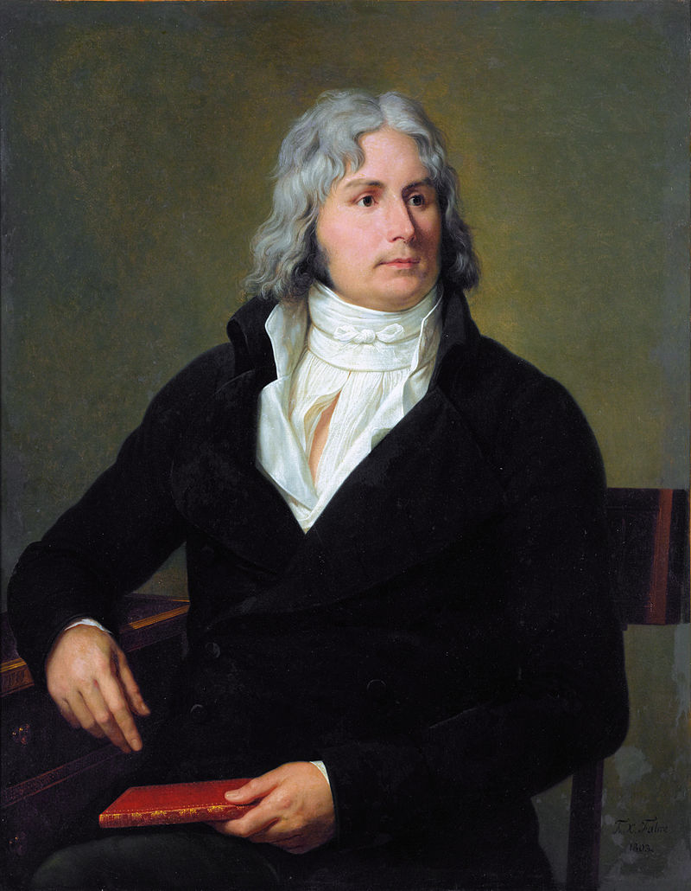

Bertin el Viejo o también conocido como Bertin l'Aîné
Louis-François Bertin o Bertin l'Aîné ("Bertin el Viejo"; París, 14 de diciembre de 1766 - París, 13 de septiembre de 1841) fue un periodista francés.
Se atribuye a Bertin la invención del folletín (feuilleton), un suplemento a la sección política, normalmente en tipos de imprenta más pequeños, donde se publicaban asuntos de cotilleo, moda, crítica, epigramas y charadas, con una estrategia periodística similar a lo que posteriormente se denominó sensacionalismo.